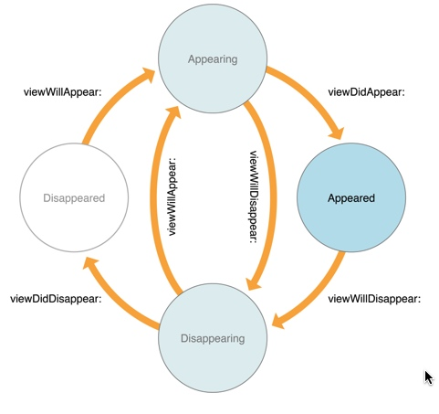
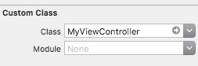
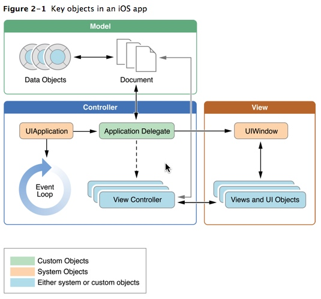
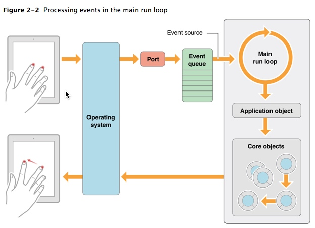
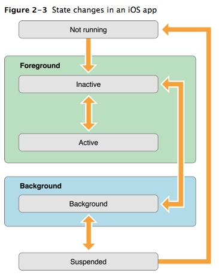
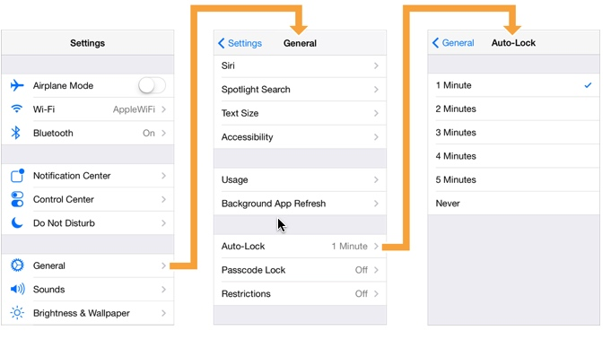
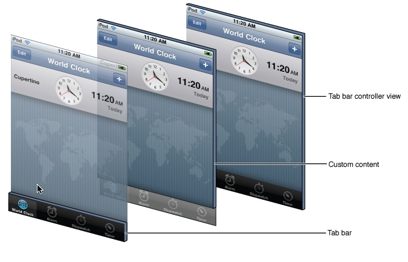
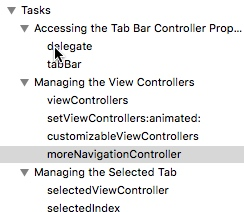

ViewController
作为连接视图View和模型Model的桥梁(控制器Controller)，从名字就可以看得出来，它是用来管理View的。除此之外，它还承担着传递数据，相应用户操作，内存管理，状态保持和适应设备的功能。
先来看看它的生存周期：

当一个viewController它管理的view出现或者消失的时候会引发相应的方法，如果有需求，可以在对应的方法里写代码来处理相应的事务。
默认状态下，Xcode会将与ViewController同名的Xib文件关联到对应的Controller上。如MyViewController关联到MyView.xib或者MyViewCon.xib。
除此之外也可以用代码来制定加载制定的xib：
[UIViewController initWithNibName:@"MyView"];
或者在IB中指定ViewController，如下：

跳转
在viewcontroller中可以跳转到另一个viewcontoller：
[self presentViewController: animated: completion:];
[self showViewController: sender:];
撤销当前的view可以使用：
[self dismissViewControllerAnimated: completion:];
回传数据
在其中可以设定回传数据或者在撤销当前view之后执行一段代码。completion是一个代码块block。
实际上是使用了观察者模式来通知第一个view，并将数据传给它。
//在第二个view中，发送do发生变化的消息，并且将数据存在字典中回转给第一个view
[self dismissViewControllerAnimated:YES completion:^{
NSDictionary *dict = [NSDictionary dictionaryWithObjectsAndKeys:@"value1", @"key1", @"value2", @"key2", nil];
[[NSNotificationCenter defaultCenter] postNotificationName:@"do" object:self userInfo:dict];
}];
//在第一个view中的viewDidLoad方法中
//注册观察者，如果do对象有变化就执行Test方法
[[NSNotificationCenter defaultCenter] addObserver:self selector:@selector(Test:) name:@"do" object:nil];
- (void)Test:(id)sender{
NSLog(@"%@", sender);
}
执行结果：
2016-06-02 17:52:33.594 NibVC[37096:5919151] NSConcreteNotification 0x7fd6495118e0 {name = do; object = <SecondViewController: 0x7fd6494b82d0>; userInfo = {
key1 = value1;
key2 = value2;
}
这种方法不仅可以用于viewController的回传值，还可以用于各个对象之间的消息传递，只需要注册观察者，和发送消息即可。
Storyboard
Storyboard中文译为故事版，也就是做界面的地方，app的应用逻辑和导演讲故事是不是很像呢？在这之前，苹果使用的是xib文件来做的界面。storyboard的有点在于对多个view的管理比xib的要好。
大多数操作就是托控件到view上，如果要关联到.m文件中则要按住Ctrl键+上控件拖到对应的.m文件上即可选择是添加为属性IBOutlet还是方法IBAction。
场景的跳转
Storyboard的场景跳转使用的是Segue，按下Ctrl拖住一个按钮到下一个场景上即可实现。
可以对Segue进行命名，以便在代码中使用Segue。
[self performSegueWithIdentifier:@"" sender:sender];
也可以在代码中显示Storyboard里的View Controller：
id vc = [self.storyboard instantiateViewControllerWithIdentifier:@""];
[self showViewController:vc sender:sender];
返回
在对应的vc中添加，再在Storyboard中将按钮的方法设置为以下方法。ForSegue可以改变为其它的名字。
```
- (void)unwindForSegue:(UIStoryboardSegue*)unwindSegue{
}
```
App的声明周期



Navigation Controller
NavigationController是一种高效管理多个界面的工具，它可以提供在多个view之间方面地跳转。

每个被管理的ViewController自己提供：
内容，导航栏标题，导航栏上的自定义按钮，或者可选的工具栏按钮。
数据的传递可以通过Segue或者Delegate，Segue上面提到过，下面就列出使用Delegate的方法：
- (void)navigationController: willShowViewController: animated:
- (void)nagivationController: didShowViewController: animated:
代码中使用
//创建
- initWithRootViewController:
- initWithNavigationBarClass:toolbarClass:
//跳转
- pushViewController:animated:
- popViewControllerAnimated:
- popToRootViewControllerAnimated:
- popToViewController:animated:
Tabbar Controller

TabbarController是另一种管理多个ViewController的方式。
使用方法和NavigationController非常相似。还可以和它结合起来一起使用。
